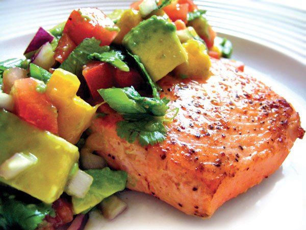

Salmon with Mango Avocado Salsa

Salmon as flavorful as it is beautiful!
Add a bright and refreshing spin to your fish!
Your palette will love exploring the flavorful blend!
Ingredients:
- 4 Salmon Fillets
- 1/3 Cup Mangoes
- 2 Tbsp Red Onions, diced
- 2 Tbsp Red Bell Peppers, diced
- 1 Tbsp Fresh Cilantro, minced
<1i>Tbsp Fresh Lime Juice
- 1/2 Tsp Jalepeno Peppers, minced
- 2 Tsp Sugar
- 1/2 Tsp. Sea salt
- 1/2 Tsp. Extra Virgin Olive Oil
- Pinch salt
- Pinch Fresh Ground Pepper
Instructions:
- Combine the avocado, mangoes, onions, tomatoes
cilantro, limejuice, jalepenos, salt, and sugar
in a medium bowl
- Lightly crush with fork to release the juices
- Heat olive oil in large sautee pan over med-high heat
- Season the salmon with salt and papper and sear
for 3 to 5 minutes on each side, or until cooked through
- Serve each fillet with 1/4 cup of mango avocado salsa